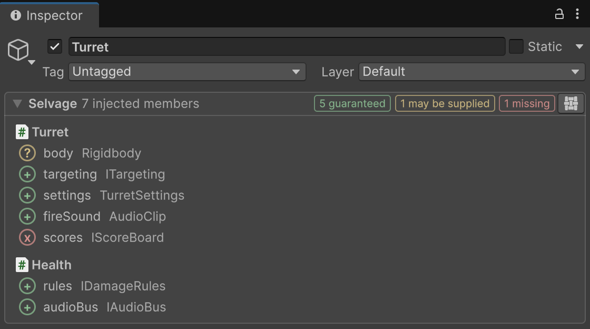
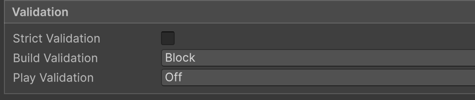

Every field checked before you press Play
The Inspector reads your code and the provider list. Nothing runs.

Guaranteed
a provider always has one
May be supplied
known when the field is injected, such as a scene component
Missing
no provider has one: you find out here, not from a null at runtime

By default, a build with a missing dependency
is blocked
.